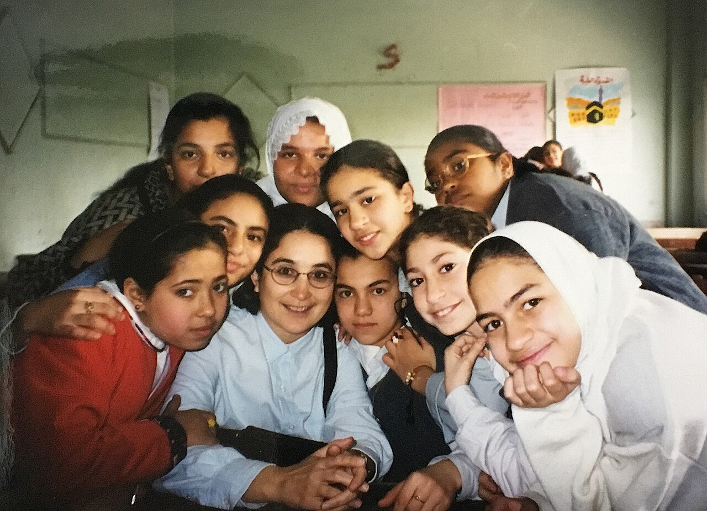
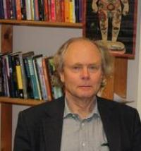
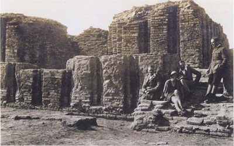

Doing Fieldwork
Anthropology's signature method is easy to state and enormously hard to do: go and live with people, for a long time, and try to understand their world from the inside. That practice is fieldwork, and the written account it produces is an ethnography. This chapter follows the anthropologist out of the library and into the field — through participant observation, the interviews and genealogies and maps that fill a notebook, the uneasy work of watching oneself watch, the duties owed to the people who open their lives to us, and the culture shock that greets almost everyone who tries. Master these ideas and you understand not only what anthropologists know, but how they came to know it.
By the end of this chapter you can
- Define ethnography and explain participant observation as the core of the ethnographic method.
- Trace the shift from armchair anthropology (Frazer) to intensive fieldwork (Boas, Malinowski, Mead).
- Describe the main fieldwork methods: interviews, the genealogical method, mapping, and life histories.
- Explain reflexivity and distinguish the emic and etic perspectives.
- State the core principles of fieldwork ethics: informed consent and the duty to do no harm.
- Summarize how a professional code of ethics governs anthropological research today.
- Recognize culture shock and the practical realities that shape what fieldwork can achieve.
Section 1Ethnography

From the armchair to the veranda
The first generation of anthropologists rarely met the people they wrote about. Sir James Frazer, author of the vast comparative work The Golden Bough (1890), assembled his sweeping theories of magic and religion from the reports of missionaries, colonial officers, and travelers, without leaving Britain. This is armchair anthropology: grand generalization built on secondhand scraps. When Frazer was reportedly asked whether he had ever seen one of the peoples he described, he is said to have answered, "God forbid." The comparative method could arrange the world's customs into tidy evolutionary ladders, but it could not say what any single custom actually meant to the people who practiced it.
Two figures broke that habit. Franz Boas, the German-American often called the father of American anthropology, insisted that cultures be studied firsthand and on their own terms — the stance later named cultural relativism. He lived among the Inuit on Baffin Island in 1883–84 and worked for decades with the Kwakwaka'wakw of the Pacific Northwest, gathering texts in the people's own language. Then Bronisław Malinowski — an Austrian subject who spent World War I in Australian-administered territory and was permitted to keep working there — passed the years 1915–18 in the Trobriand Islands off New Guinea and turned prolonged immersion into a formal method. His Argonauts of the Western Pacific (1922) opens by instructing the ethnographer to leave the company of other outsiders, pitch a tent in the village, and learn the texture of ordinary life — advice the discipline later condensed into the slogan "get off the veranda."
Participant observation
The method Malinowski modeled is a productive paradox: participant observation, in which the anthropologist simultaneously takes part in daily life and observes it with an analyst's eye. You attend the harvest, the funeral, the market and the quarrel; you also step aside to write it all down. Doing both at once is the craft. Malinowski wanted what he called the imponderabilia of actual life — the routines, gestures, and moods too small for anyone to think worth reporting, yet exactly what a culture is made of.
Two features make the method distinctive. First, duration: classic fieldwork runs a year or more, long enough to witness a full seasonal and ritual cycle and to move past what people say for visitors toward what they actually do. Second, language: the fieldworker learns to converse in the local tongue rather than depend on interpreters, because meaning lives in words that rarely translate cleanly. Margaret Mead, Boas's student, spent about nine months in Samoa in 1925–26 for Coming of Age in Samoa (1928); her later work in the Pacific helped make long-term immersion the expected apprenticeship of every anthropologist.
Thick description and the ethnography as text
Fieldwork ends at a desk. The anthropologist must turn a shelf of notebooks into an ethnography — a written portrait of a way of life. Clifford Geertz, borrowing a phrase from the philosopher Gilbert Ryle, argued that good ethnography offers not thin behavior-logging but thick description: an account that records not just the act but its layered meaning. His famous example is the difference between a twitch and a wink — physically identical eye movements that mean utterly different things, one a nervous tic and the other a coded message. In his essay on the Balinese cockfight, Geertz read a single event as a text expressing status, kinship, and masculine rivalry. The word ethnography thus names both the doing and the writing: the method in the field and the book on the shelf. Writing carries its own conventions and its own traps — the ethnographic present, the habit of describing a culture in the present tense as it appeared during fieldwork, can freeze a living, changing society into a timeless snapshot.
| Dimension | Armchair anthropology | Participant observation |
|---|---|---|
| Source of data | Others' reports — travelers, missionaries, officials | Firsthand, lived experience in the community |
| Time in the field | None | A year or more on site |
| Language | Reads translations | Learns the local language |
| Stance | Detached comparison from a distance | Immersion, participation, and dialogue |
| Exemplar | Frazer, The Golden Bough | Malinowski, Argonauts of the Western Pacific |
- Ethnography is both the fieldwork method and the written account it produces.
- Anthropology shifted from armchair generalization (Frazer) to firsthand fieldwork (Boas, Malinowski, Mead).
- Participant observation means taking part in daily life while systematically observing it — usually for a year or more, in the local language.
- Geertz's thick description records not just behavior but its meaning — the wink, not just the twitch.
Section 2Fieldwork methods

Interviews, from a chat to a schedule
Participant observation shows what people do; interviews reach for what they think, believe, and can explain. Fieldworkers use a range of formats. An unstructured interview is an open, wandering conversation that lets a topic surface on its own terms. A semi-structured interview follows a loose guide of themes while leaving room to follow the unexpected. A structured interview asks every participant the same fixed questions, so answers can be compared across a sample. Much of what an anthropologist learns comes from a few key informants — also called cultural consultants — especially knowledgeable people who become guides, teachers, and interpreters of their own society.
Because people do not always do what they say, or say what they do, anthropologists lean on triangulation: checking a claim from an interview against direct observation and against a third source, such as a document or a second informant. When the three converge, confidence rises; when they diverge, the gap itself is often the most interesting finding.
The genealogical method and mapping
Kinship organizes an enormous amount of life in small-scale societies, so anthropologists developed a formal way to record it. The genealogical method, systematized by W. H. R. Rivers during the Cambridge Torres Strait Expedition of 1898, uses a standardized notation to chart family ties: a triangle for a male, a circle for a female, an equals sign for marriage, and vertical lines for descent, all radiating from a reference individual the anthropologist labels Ego. From these diagrams one can read a society's descent system and marriage rules at a glance — the same evidence Lewis Henry Morgan used earlier to map Iroquois (Haudenosaunee) kinship terms in his Systems of Consanguinity and Affinity of the Human Family (1871). Alongside genealogy, fieldworkers draw maps: a spatial map of houses, gardens, and paths, and a social map of who lives with whom, often paired with a household census counting people, animals, and resources.
Life histories
Sometimes a whole culture is best seen through a single life. A life history is an extended, first-person account of one person's biography, collected over many sessions, that reveals how large cultural patterns are lived from the inside. Marjorie Shostak's Nisa: The Life and Words of a !Kung Woman let a Ju/'hoansi woman of the Kalahari narrate marriage, motherhood, and loss in her own voice; Leo Simmons's Sun Chief did the same for the Hopi elder Don Talayesva. A life history cannot stand for everyone, but it captures the emotional grain of a culture that a survey never will.
| Method | What it captures | Classic use |
|---|---|---|
| Participant observation | Everyday behavior — the "imponderabilia" of daily life | Malinowski, Trobriand Islands |
| Interviews | What people say, believe, and can explain | Key informants in every field site |
| Genealogical method | Kinship, descent, and marriage ties | Rivers, Torres Strait Expedition |
| Mapping & census | Space, households, and resources | Village site and social maps |
| Life history | One life as a window on a whole culture | Shostak, Nisa |
- Interviews range from unstructured to semi-structured to structured; a few key informants do much of the teaching.
- The genealogical method (Rivers) records kinship in a standardized chart centered on Ego.
- Mapping and a household census fix people, space, and resources on paper.
- A life history reveals a culture through one person's remembered life; triangulation cross-checks every claim.
Section 3The observer's role

Emic and etic
Anthropologists describe cultures from two angles, and the difference matters. The emic perspective is the insider's view: the categories, meanings, and explanations that members of a culture use themselves. The etic perspective is the outside analyst's view: the comparative, often scientific frame the anthropologist brings from outside. The linguist Kenneth Pike coined both words in the 1950s, clipping them from phonemic (sounds as speakers distinguish them) and phonetic (sounds as an outside instrument measures them). An emic account asks, "What does this practice mean to them?" An etic account asks, "How does this practice compare across societies, and what function might it serve?"
Neither view alone is enough, and the two live in tension. Lean too far emic and you risk "going native," losing the distance analysis requires; lean too far etic and you risk crushing local meaning under alien categories. Marvin Harris and his cultural materialism prized etic explanation — his account of India's sacred cattle rested on ecological economics the Hindu farmer might never cite — while Clifford Geertz and interpretive anthropology chased the emic meanings people actually hold. Good ethnography moves deliberately between the two.
Reflexivity
Unlike a chemist's thermometer, the anthropologist is a human instrument who changes what she measures simply by being present. Reflexivity is the discipline of accounting for that fact — examining how the fieldworker's own positionality (age, gender, race, nationality, wealth, and history) shapes what people reveal, what they conceal, and what the anthropologist is able to see. A young unmarried woman and a middle-aged man will be admitted to different rooms, told different secrets, and trusted in different ways.
Renato Rosaldo gave the classic demonstration. For years he could not grasp why Ilongot (Bugkalot) men of the northern Philippines spoke of headhunting as an outlet for grief — until his wife, the anthropologist Michelle Rosaldo, died in an accident in the field and the rage of bereavement made their words newly legible. His essay "Grief and a Headhunter's Rage" argues that the ethnographer's emotions and life circumstances are not contaminants to be scrubbed away but part of how understanding is reached. Ruth Behar pressed the point in The Vulnerable Observer (1996), and the 1980s "reflexive turn," announced in the 1986 collection Writing Culture (edited by James Clifford and George Marcus), forced the discipline to ask who holds the authority to represent whom.
| Dimension | Emic (insider) | Etic (outsider) |
|---|---|---|
| Viewpoint | The participant's own categories and meanings | The analyst's comparative, external frame |
| Question asked | "What does this mean to them?" | "How does this compare and what does it do?" |
| Origin of the term | Pike, from phonemic | Pike, from phonetic |
| Main risk | Going native; losing analytic distance | Imposing alien categories on local life |
| Champion | Interpretive anthropology (Geertz) | Cultural materialism (Harris) |
- The emic view is the insider's meanings; the etic view is the outside analyst's frame — both coined by Pike.
- Harris's cultural materialism favors etic explanation; Geertz's interpretive anthropology pursues emic meaning.
- Reflexivity examines how the anthropologist's own positionality shapes the findings.
- Rosaldo's "Grief and a Headhunter's Rage" shows the observer's own life as part of how understanding is reached.
Section 4Fieldwork ethics

Informed consent
Because fieldwork enters people's homes and confidences, it carries heavy ethical obligations. The bedrock is informed consent: participants must understand what the research is, what taking part involves, and how the results may be used, and they must agree freely, with the right to refuse or withdraw at any time. In anthropology this is rarely a one-time signature. Consent is ongoing and often verbal, renegotiated as the fieldworker's questions change and as trust deepens or frays. In settings without a literacy tradition, or where authority is communal rather than individual, a Western consent form can be meaningless or even coercive, and the anthropologist must find culturally appropriate ways to secure genuine agreement, protect confidentiality, and anonymize identities.
Do no harm
The first duty of the fieldworker is to do no harm to the people, animals, communities, and materials studied. That principle has been learned partly through failure. Project Camelot (1964) was a U.S. Army-funded scheme to use social science to predict and counter insurgency in Chile and elsewhere; its exposure caused an international scandal and taught anthropologists to ask who ultimately benefits from their data. Decades later, Patrick Tierney's Darkness in El Dorado (2000) ignited a bitter controversy over Napoleon Chagnon's long research among the Yanomami of Amazonia; the book's gravest accusations were subsequently investigated and largely discredited, but the affair still forced a hard public reckoning with how fieldwork affects the communities it studies and how it portrays them. And the military's Human Terrain System, which embedded social scientists with combat units in Iraq and Afghanistan, drew formal condemnation from the profession. Each case sharpened a single lesson: knowledge about vulnerable people can be turned against them, so the researcher's responsibility does not end when the notebook closes.
Anthropology's codes
To make these duties explicit, professional bodies publish a code of ethics. The American Anthropological Association (AAA) first issued its Principles of Professional Responsibility in 1971 and has revised them since; parallel codes exist worldwide. The codes do not resolve every dilemma — fieldwork constantly pits competing obligations against one another — but they set non-negotiable commitments: do no harm, be open and honest about your work, obtain informed consent, weigh conflicting responsibilities transparently, protect confidential records, and make results accessible. Above all, the codes state that when obligations collide, the anthropologist's primary responsibility is to the people studied, ahead of any funder, government, or the discipline itself.
| Principle | What it asks of the fieldworker |
|---|---|
| Do no harm | Avoid harm to the people, animals, and materials you study |
| Informed consent | Secure voluntary, ongoing agreement to take part |
| Be open and honest | Disclose the aims, methods, and funding of the research |
| Weigh obligations | Put the people studied first when duties conflict |
| Protect records | Safeguard confidentiality and store field data responsibly |
| Make results accessible | Share findings appropriately with communities and colleagues |
- Informed consent in anthropology is voluntary, ongoing, and adapted to local norms — not just a signed form.
- The primary duty is to do no harm to the people and communities studied.
- Cases like Project Camelot, the Yanomami controversy, and the Human Terrain System show how research can be misused.
- The AAA code of ethics makes these duties explicit and places the people studied first.
Section 5Challenges of fieldwork

Culture shock
Almost every fieldworker meets culture shock: the disorientation, anxiety, and fatigue that come from losing the familiar cues that once made daily life effortless. The anthropologist Kalervo Oberg coined the term in a 1954 talk and set it out in a 1960 article, describing it as unfolding in phases. A honeymoon of fascination gives way to a crisis in which small frustrations — not knowing how to greet, shop, or apologize — pile into homesickness and self-doubt; then comes gradual adjustment as language and routine take hold; and finally a rough mastery in which the strange has become ordinary. Laura Bohannan's classic essay "Shakespeare in the Bush" (1966) captures the vertigo perfectly: retelling Hamlet to Tiv elders in Nigeria, she watched them confidently correct the plot to fit their own moral world, and realized how little of her own culture's "obvious" meanings survived translation. Many anthropologists report a second jolt — reverse culture shock — when their own home feels alien on return.
The realities of the field
Beyond the emotional adjustment lie stubborn practical hurdles. A fieldworker must first get past gatekeepers — the officials, elders, or family heads who grant or deny access — and then build rapport, the slow accumulation of trust that turns a suspicious outsider into a tolerated guest. Language must be learned, often from scratch. There is loneliness, illness, and physical hardship; there are ethical dilemmas that arrive without warning and must be resolved on the spot; and there is the sheer length of the commitment, since the discipline expects a stay long enough to see a full cycle of life. Funding is scarce and, increasingly, some field sites carry real danger.
Fieldwork as a rite of passage
It is telling that anthropologists describe their own first fieldwork in the language of ritual. Arnold van Gennep, in The Rites of Passage (1909), showed that such rites move through three phases — separation, a liminal in-between, and reincorporation — and Victor Turner deepened the ideas of liminality and communitas through his study of Ndembu ritual in what is now Zambia. Fieldwork fits the pattern almost exactly: the novice separates from home, endures a long and disorienting liminal passage in the field, and returns transformed, now a full member of the discipline. The hardship is not incidental. It is, in a real sense, the anthropologist's own rite of passage.
| Stage | What it feels like |
|---|---|
| Honeymoon | Fascination and excitement with everything new |
| Crisis (culture shock) | Frustration, anxiety, and homesickness as differences bite |
| Adjustment | Learning the language, routines, and local logic |
| Mastery / adaptation | Functioning with ease; the strange becomes ordinary |
| Reverse culture shock | Fresh disorientation on returning home |
- Culture shock (named by Oberg) moves through honeymoon, crisis, adjustment, and mastery — often with reverse shock on return.
- Bohannan's "Shakespeare in the Bush" shows how meanings we think obvious fail to translate.
- Real fieldwork means gatekeepers, building rapport, language learning, isolation, and long duration.
- Framed through van Gennep and Turner, fieldwork is itself a rite of passage with a liminal middle.
The chapter in one breath
- Ethnography is anthropology's core method and its written product; it replaced armchair generalization (Frazer) with firsthand fieldwork (Boas, Malinowski, Mead).
- Participant observation means living among people for a year or more, in their language, taking part while observing — reaching for Geertz's thick description.
- Fieldwork methods include interviews (unstructured to structured, with key informants), the genealogical method, mapping, and life histories, all cross-checked by triangulation.
- The emic (insider) and etic (outsider) perspectives, coined by Pike, are held in productive tension.
- Reflexivity and positionality acknowledge that the anthropologist is a human instrument who shapes the findings.
- Fieldwork ethics rest on informed consent and the duty to do no harm, codified by the AAA, with the people studied placed first.
- Culture shock and the hard realities of the field make fieldwork, in van Gennep and Turner's terms, the discipline's own rite of passage.
ReferenceWords worth knowing
A quick reference for the terms in this chapter — skim it now, or circle back whenever a word trips you up.
- Armchair anthropology
- Early anthropology that theorized about cultures from others' reports without doing fieldwork; associated with Frazer.
- Cultural relativism
- The principle that a culture should be understood on its own terms rather than judged by the standards of another; central to Boas's approach.
- Culture shock
- The disorientation and anxiety of losing familiar cultural cues; named by Kalervo Oberg and often unfolding in stages.
- Do no harm
- The first obligation of the fieldworker — to avoid harm to the people, animals, communities, and materials studied.
- Emic
- The insider's perspective — the categories and meanings a culture's own members use; coined by Kenneth Pike from phonemic.
- Ethnographic present
- The convention of writing about a culture in the present tense, as observed at the time of fieldwork.
- Ethnography
- Both the fieldwork method of studying a culture firsthand and the written account that results.
- Etic
- The outside analyst's perspective — a comparative, scientific frame brought from outside the culture; coined by Pike from phonetic.
- Fieldwork
- Extended, firsthand research carried out by living among the people being studied.
- Gatekeeper
- A person — official, elder, or family head — who controls the anthropologist's access to a community.
- Genealogical method
- A standardized way of charting kinship, descent, and marriage using set symbols centered on Ego; systematized by W. H. R. Rivers.
- Informed consent
- The voluntary, ongoing agreement of participants who understand the research and how its results may be used.
- Key informant
- An especially knowledgeable community member (also called a cultural consultant) who guides and teaches the fieldworker.
- Life history
- An extended first-person account of one person's life, used to reveal wider cultural patterns.
- Liminality
- The ambiguous in-between phase of a rite of passage, when a person has left one status but not yet entered the next; developed by Victor Turner.
- Participant observation
- The core ethnographic method of taking part in daily life while systematically observing it.
- Positionality
- The anthropologist's social location — age, gender, race, nationality, and more — that shapes access and understanding.
- Rapport
- The relationship of trust the fieldworker builds with a community over time.
- Reflexivity
- Critical awareness of how the researcher's own presence and background shape the research and its findings.
- Rite of passage
- A ritual marking a change in status, moving through separation, a liminal phase, and reincorporation; theorized by van Gennep and Turner.
- Thick description
- Geertz's term for interpretation that records not just behavior but its layered cultural meaning.
- Triangulation
- Cross-checking a finding against multiple sources — observation, interview, and documents — to test its reliability.